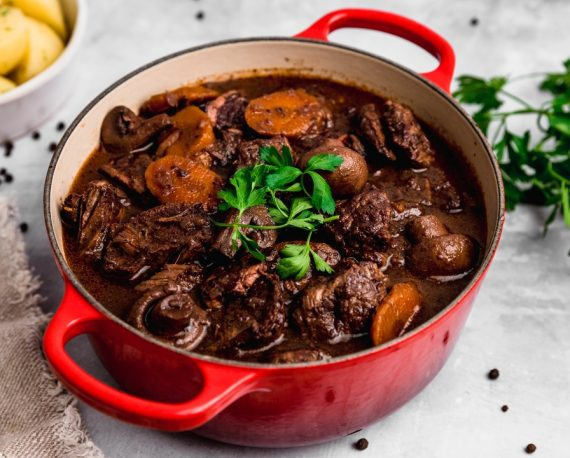

Pollo tikka masala
La gastronomía es, como parte fundamental de la cultura, algo vivo en continua evolución y movimiento. Este razonamiento es quizás la forma más adecuada de definir el origen del pollo Tikka Masala. Existe una vieja polémica, si se le puede llamar así, sobre este plato que ha cruzado las fronteras de medio mundo, deleitando paladares con sus aromas, colores y sabores. Esta polémica versa sobre su origen, siendo varias zonas las que han afirmado ser la cuna de este manjar. Por un lado quien reivindica sus raices hindús y por otro quien afirma que este plato no proviene de la India, siendo producto de los cocineros en su afán por aclimatar la cocina hindú al paladar británico.
Link de la informacionBoeuf-Bourguignon
El boeuf bourguignon o bœuf à la Bourguignonne, antes conocido como “estouffade de bœuf”, nació en Borgoña, Francia. La magnífica región de Borgoña, con su deslumbrante arquitectura, se encuentra a unas 60 millas al sureste de París y se extiende más de 220 millas. Cuenta con más de 2000 municipios y es una de las regiones más fascinantes de Francia.
Link de la informacionMousse

La mousse es una de esas palabras que solo con pronunciarlas se nos hace la boca agua, con una textura fina y esponjosa, una elaboración que se puede preparar tanto para platos dulces como para platos salados. El origen de la mousse se remonta a la Francia del siglo XVIII, cuando aparece por primera vez en un recetario del cocinero francés Menon. En él, se describían tres tipos de mousse: de chocolate, café y azafrán. Sin embargo, existen otras teorías que afirman que su origen es posterior y que fue creada por el pintor francés, Henri de Toulouse-Lautrec, casi a finales del siglo XIX.
Link de la informacion